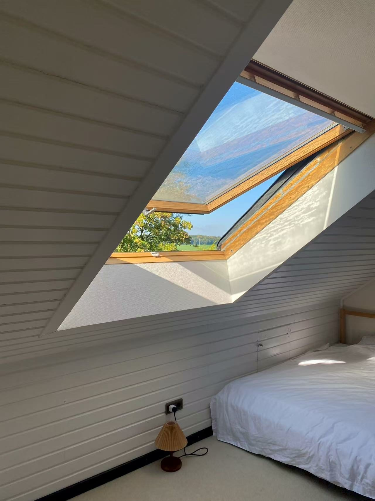

EN · FR
Existe-t-il des internats au Luxembourg ?
Non — le Luxembourg ne compte pas d’internats internationaux traditionnels. Les écoles internationales du Grand-Duché sont des écoles de jour. Lorsqu’un enfant étudie au Luxembourg sans parent résidant sur place, les familles combinent généralement une place en école de jour avec une famille d’accueil contrôlée et un tuteur formellement désigné — la structure que les écoles reconnaissent, et que ce guide explique.
Pourquoi le Luxembourg n’a pas d’internats
Cette absence est structurelle, pas accidentelle. Le Luxembourg est un petit pays densément connecté où presque chaque élève peut rejoindre son école depuis son domicile ; un marché de l’internat résidentiel de type britannique ou suisse n’a jamais eu besoin de s’y développer. Quelques lycées publics disposent d’un internat — une résidence d’élèves encadrée — mais ceux-ci servent principalement des élèves résidant déjà au Luxembourg, relèvent du système scolaire public, et ne correspondent pas à ce que la plupart des familles internationales entendent par « boarding school ».
Le constat surprend beaucoup de familles venant de marchés où l’internat est la voie par défaut des études à l’étranger : au Luxembourg, l’internat international n’est tout simplement pas au menu.
Ce que le Luxembourg offre à la place
Le Luxembourg dispose en revanche d’un paysage d’écoles de jour exceptionnellement riche pour un pays de sa taille :
- Des écoles internationales privées enseignant en anglais (et dans d’autres langues), proposant des programmes comme le Baccalauréat International (IB) ou les A-levels.
- Des écoles publiques à agrément européen — des écoles publiques gratuites offrant le Baccalauréat européen avec des sections linguistiques anglaise, française ou allemande, un modèle que peu de familles à l’étranger connaissent.
- Le système public trilingue (luxembourgeois, allemand, français), le mieux adapté aux jeunes enfants et aux familles installées durablement.
Toutes sont des écoles de jour. La vraie question pour une famille dont l’enfant étudierait ici sans parent sur place n’est donc pas « quel internat ? » mais « où mon enfant vit-il, et qui en est responsable au quotidien ? »
Le modèle famille d’accueil + tutelle
La réponse établie comporte deux volets, et les écoles s’attendent à ce que les deux soient en place avant d’examiner une telle candidature :
- La famille d’accueil fournit le foyer : une chambre dans un ménage local contrôlé, les repas, un rythme quotidien et une présence adulte chaque soir. Les dispositifs sérieux comprennent la vérification des antécédents des adultes du foyer, des visites du domicile, des règles de vie écrites et des points de suivi réguliers.
- Le tuteur porte la responsabilité : un adulte disponible localement, formellement désigné par les parents pour agir en leur nom — contact d’urgence de l’école, présent aux réunions de parents, décideur lorsqu’un imprévu survient un mardi à 14 h alors que les parents sont à sept fuseaux horaires.
Les deux rôles peuvent être appuyés par la même organisation de coordination mais remplissent des fonctions distinctes : l’un est le lieu de vie de l’enfant ; l’autre, la personne qui en répond. Les écoles du Luxembourg appliquent leur propre politique de protection de l’enfance aux deux, et les dispositifs bien conduits se réfèrent aux standards internationaux reconnus en matière de tutelle.

Ce que les écoles demanderont
Face à la candidature d’un élève international non accompagné, les équipes d’admission veulent généralement voir :
- un tuteur nommément désigné, résidant localement, avec un mandat documenté des parents ;
- un hébergement conforme à la politique de protection de l’enfance de l’école ;
- une adéquation réaliste de section linguistique et de niveau — les écoles placent les élèves là où ils peuvent réussir, pas simplement là où les parents postulent ;
- des lignes de communication claires entre école, tuteur, famille d’accueil et parents.
Un point qu’aucun dispositif ne change : les décisions d’admission relèvent exclusivement de l’école, et aucune admission n’est jamais garantie. Un dossier bien préparé, adossé à une structure d’encadrement crédible, est plus solide — pas certain.
Ce modèle convient-il à votre famille ?
Il convient le mieux lorsque l’enfant a la maturité d’une vie semi-autonome (les écoles situent généralement le seuil à l’adolescence), lorsque la famille recherche précisément ce que le Luxembourg offre — ses langues, ses programmes, sa stabilité — et lorsqu’elle est prête à investir dans un encadrement structuré plutôt qu’informel. Les familles attachées à l’expérience d’un campus avec internat complet sont généralement mieux servies par les internats des pays voisins ; c’est une réponse honnête que nous donnons régulièrement.
Pour les familles qui pèsent plus largement la question de la scolarisation au Luxembourg, notre section Pour les familles présente notre accompagnement, et la section Standards et protection de l’enfance décrit le cadre de conformité de chaque dispositif.
Questions fréquentes
Mon enfant peut-il étudier au Luxembourg sans que ses parents y vivent ?
Dans de nombreux cas oui, selon la politique de chaque école. Les écoles exigent généralement un tuteur résidant localement, responsable au quotidien, et un hébergement conforme à leurs exigences de protection de l’enfance, comme une famille d’accueil contrôlée. Chaque école fixe ses propres règles.
À quels âges le modèle de famille d’accueil convient-il ?
La plupart des dispositifs structurés concernent des élèves du secondaire. Les écoles fixent leurs propres seuils, et les enfants plus jeunes nécessitent généralement un parent résidant sur place.
Que fait concrètement le tuteur ?
Le tuteur est le représentant local des parents : contact d’urgence pour l’école, présent aux réunions de parents, décideur en situation urgente et garant du bien-être de l’élève entre les visites familiales.
Comment les familles d’accueil sont-elles contrôlées ?
Les dispositifs responsables comprennent la vérification des antécédents des adultes du foyer, des visites du domicile, des règles de vie écrites, des lignes de signalement définies et des points de suivi réguliers — conduits selon la politique de protection de l’enfance de l’école et les standards reconnus de tutelle.
Et si nous voulons finalement un véritable internat ?
Alors le Luxembourg n’est honnêtement pas la réponse, et les internats des pays voisins constituent la voie habituelle. On choisit le Luxembourg pour ses écoles de jour, ses langues et sa stabilité de long terme — le modèle famille d’accueil + tutelle rendant cela accessible aux enfants qui étudient sans leurs parents.
Parlez-nous de votre situation
Écrivez-nous une brève description de la situation de votre famille. Pour une première réponse utile, précisez :
- L’âge et le niveau scolaire actuel de votre enfant
- Le programme envisagé (IB, A-level, Baccalauréat européen, autre)
- Si un parent résidera au Luxembourg
- La date d’entrée souhaitée
Ou via le formulaire de contact — décrivez votre situation, réponse sous un jour ouvré.